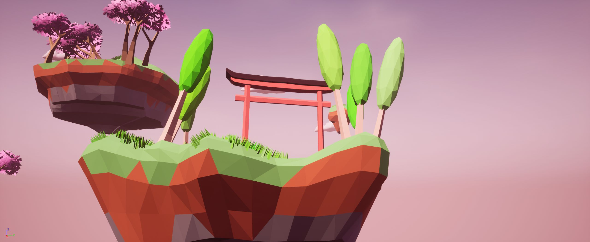

Sky Garden
Sky Garden est ma première expérience avec le dévellopement de jeux, je l'ai développé sur Unreal Engine 4. Il s'agit d'un jeu de type slender avec une direction artistique Low Poly et à l'ambiance japonaise. C'est également sur ce projet que j'ai découvert la modélisation 3D et qu'est née ma passion pour ce médium
La carte de l'introduction du jeu :
L'emplacement de départ d'où le joureur commence :
La vue d'ensemble de la zone centrale :
Le temple flotant :
Le jeu est disponible gratuitement sur Itch.io :